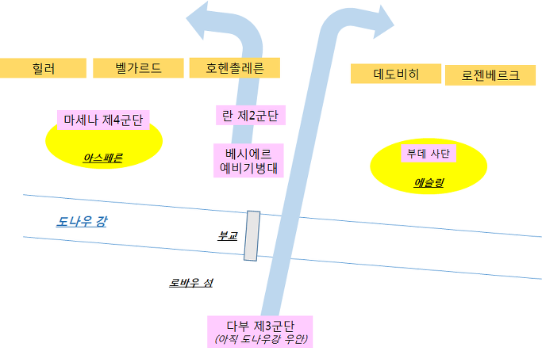
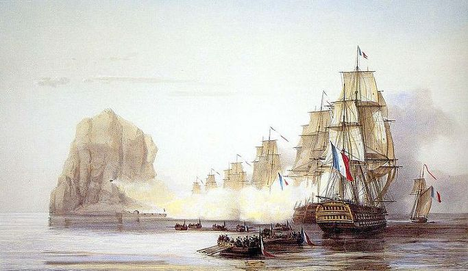
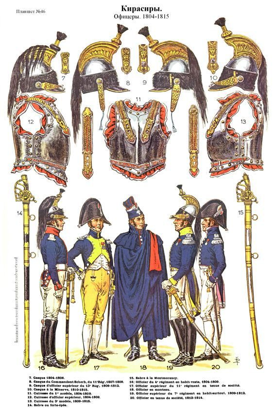
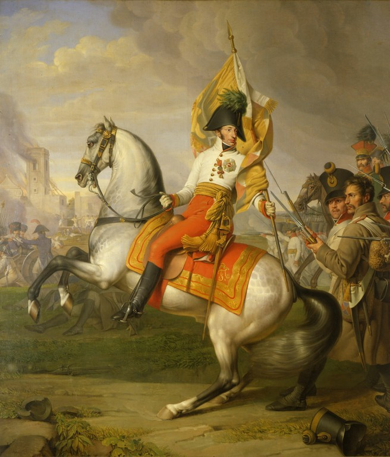

아스페른-에슬링 7편 - 고민과 선택
게시: 2017-03-19T21:24:28+09:00
새벽이라고 부르기에도 너무 이른 시각이었던 5월 22일 새벽 3시 경, 이미 나폴레옹은 말 안장에 올라타 있었습니다. 그는 밤 사이에 란의 제2 군단 병사들이 도나우 강을 건너 좌안으로 이동하는 것을 직접 감독하느라 거의 쉬지 못했으나, 별로 피곤한 줄도 몰랐습니다. 이제 몇 시간 뒤면 오스트리아군 주력을 격파할 생각에 부풀어 있었으니까요.
그의 기본 계획은 그 전날 전투에서 목격한 오스트리아군의 어설픈 배치의 틈을 파고드는 것이었습니다. 오스트리아군은 아스페른에 병력을 집중하고 있었고, 에슬링에 대한 공격은 다소 느슨했는데, 그 두 마을 사이의 중앙 평원에 대해서는 병력이 그다지 많지 않았습니다. 나폴레옹은 그 중앙을 돌파할 생각이었습니다. 이를 위해, 항상 프랑스군의 선봉을 맡았던 란이 다시 한번 그 중앙부를 돌파하게 되어 있었습니다. 그러고난 뒤, 란은 크게 좌향좌를 하여 오스트리아 주력인 힐러, 벨가르드, 호헨촐레른의 3개 군단을 측면으로부터 돌돌 말아올릴 예정이었지요. 그러기 위해서는 란이 이끌고 돌격할 제2 군단이 강을 무사히 건너야 했는데, 새벽 3시가 되어 그 도강이 완료되었습니다. 즉, 작전 실행 준비가 끝난 셈이었습니다.

(이것이 나폴레옹 머리 속에 그려지던 5월 22일, 둘째날 전투의 전개도였습니다. 그러나 여기서 결정적인 역할을 해줄 다부의 제3군단은 로바우 섬은 커녕 아직 도나우강 우안에도 도착하지 못한 상태였습니다.)
그러나 오스트리아군을 바보 취급해서는 안 되었습니다. 란이 측면에서 오스트리아군을 돌돌 말아올릴 때, 란의 측면을 오스트리아군의 좌익, 즉 로젠베르크와 데도비히가 역으로 들어치는 일이 있어서는 안 되었습니다. 물론 나폴레옹은 그에 대해서도 준비를 해 놓았습니다. 즉, 이미 전날 밤 9시에 다부에게 전령을 보내, 그의 제3 군단을 도나우 강 우안의 부교 시작점인 카이저에버스도르프로 소환해 놓았던 것입니다. 이들이 밤새 행군하면 아침 나절에 거기에 도착할 것이니, 그들을 도강시켜 란이 자리를 비운 중앙 지점으로 밀고 나가면 되었습니다. 거기서 다부의 군단은 란이 뚫어놓은 구멍을 통과하여 란과는 반대 방향인 우향우를 한 뒤 로젠베르크와 데도비히의 옆구리를 들이치기로 되어 있었습니다. 그 뿐만 아니었습니다. 이 작전의 핵심인 란의 김밥말기가 제대로 이루어지려면 힐러, 벨가르드, 호헨촐레른의 군단들을 잘 정리해놓아야 했습니다. 따라서 그들과 아스페른 마을 안에서 뒤엉켜 있던 마세나의 제4 군단이 그들을 먼저 평원으로 밀어내는 것으로 작전을 시작하게 되어 있었습니다.
그래서 전날 밤 11시까지 아스페른을 손에 넣으려는 오스트리아군과 혈투를 벌이다, 골목 하나를 경계로 지쳐 쓰러져 잠든 마세나의 병사들은 불과 몇 시간 자지도 못한 채 다시 부사관들의 재촉을 받으며 일어나야 했습니다. 새벽 4시, 마세나의 병사들이 아스페른으로부터 오스트리아군을 몰아내기 위해 공격을 시작함으로써 아스페른-에슬링 전투의 두번째 날이 시작된 것이지요. 잠을 자다 기습을 당한 오스트리아군은 프랑스군의 기세를 당해내지 못했습니다만, 그래도 과거와는 달리 맥없이 무너지지는 않았습니다. 이들은 의외로 완강하게 저항했는데, 그래도 아침 7시 경에는 결국 아스페른 마을 대부분에서 프랑스군에게 밀려나 버렸습니다.
한편, 마침 자욱하게 안개까지 끼어 아무 것도 보이지 않는 새벽의 어둠 속에서 란의 제2 군단 병사들은 아스페른-에슬링 사이의 평원에 있는 밭두렁 뒤로 조용히 행군하여 포진을 시작했습니다. 새벽 4시부터 아스페른으로부터 시작된 전투는 곧 이들에게도 영향을 미치기 시작했습니다. 이들의 전면 평원에 자리를 잡은 오스트리아군 포병대가 안개와 어둠을 무시하고 닥치는 대로 평원을 휩쓰는 포격을 개시한 것입니다. 란의 병사들은 밭두렁 뒤에 납작 엎드려 있긴 했습니다만, 점점 날이 밝아오고 설상가상으로 자신들을 가려주던 안개마저 아침 7시가 되자 걷히기 시작하면서 슬슬 불안하고 초조해졌습니다. 벌써 3시간 째 적의 포격에 노출된 채로 밤이슬을 맞으며 나폴레옹의 진격 명령을 기다리자니 죽을 맛이었겠지요. 차라리 어떻게 되건 간에 빨리 돌격이나 했으면 좋겠다는 생각이 들 만도 했습니다.
한편, 이들의 상황을 뻔히 알면서도 공격 명령을 내리지 않고 있던 나폴레옹에게도 그럴 만한 이유는 있었습니다. 로바우 섬에 자리잡고 앉아 망원경으로 전장을 지켜보면서도 사방에서 들어오는 전령들의 보고를 받고 있던 그는 다부의 제3 군단을 기다리고 있었습니다. 란의 제2 군단이 진격하고 나면 텅 비게 되는 그 자리를 채워줄 이들이 도착해야 작전을 시작할 수 있었으니까요. 다부의 군단은 항상 쾌속 행군으로 유명했는데, 과연 아침 7시가 되자 강 우안의 카이저에버스도르프에 다부의 군단이 집결을 완료했다는 보고가 날아들었습니다. 하지만 아직 준비가 완전한 것은 아니었습니다. 약 3만에 달하는 다부의 군단이 3km가 넘는 부교와 섬을 건너 도나우 강 좌안으로 넘어오려면 최소 3시간 이상이 필요했습니다. 저 길고 좁은 위태위태한 부교를 군단 전체가 건너려면 엄청난 병목이 있을 수 밖에 없었으니까요. 게다가 마세나와 란의 병사들이 사용할 예비 탄약도 아직 강의 우안에 그대로 쌓여 있는 상황이었습니다. 마차에 이 포탄과 탄약 상자들을 싣고 부교를 건너는 것은 시간이 많이 걸리는 일이었습니다. 완벽한 작전을 위해서는, 다부의 군단과 예비 탄약이 강 좌안은 아니더라도 최소한 로바우 섬까지는 건너와 있어야 했습니다.
여기서 많은 사람들이 고개를 갸우뚱 거리는 결정이 내려집니다. 다부의 군단이 이제 막 도강을 시작하려는 상황에서, 나폴레옹이 란에게 진격 명령을 전달한 것입니다. 3개의 섬을 징검다리 삼아 연결된 부교 중 특히 우안과 롭그룬트 섬 사이를 잇는 긴 부교는 이미 두어 차례 끊어진 바 있었습니다. 이런 상황에서, 아직 추가 병력과 예비 탄약이 강을 건너지 못한 채로 공격을 시작했다가 부교가 다시 끊어지기라도 한다면, 그야말로 낭패였습니다. 너무 성급하게 나설 것이 아니라, 그냥 몇 시간만 더 기다려 병력과 탄약이 로바우 섬으로 넘어온 다음에 공격을 시작하는 것이 안전했습니다.
하지만 생각해보면 애초에 전투 현장에서 안전을 기대한다는 것 자체가 어불성설이었습니다. 그리고 나폴레옹의 연전연승의 비결 중 하나는 '적보다 반박자 빠른 행동'이었습니다. 기억들 하시겠습니다만, 1805년 아우스테를리츠의 대승을 거둘 때도, 전체 작전의 핵심 역할을 수행했던 다부의 군단은 당일 전투 직전까지도 전투 현장을 향해 맹렬히 행군 중이었습니다. 만약 나폴레옹이 다부의 도착 이후까지 전투를 미루었다면 아우스테를리츠의 완벽한 대승은 일어나지 않았을 것입니다. 마렝고에서도, 프리틀란트에서도, 나폴레옹은 전체 병력이 현장에 도착하지 않은 상태에서도 과감히 전투를 시작했습니다. 그렇게 반박자 빠른 작전에 대해 그의 적수들은 속수무책으로 당할 수 밖에 없었지요. 그런 강점을 포기하고, 모든 것이 갖추어진 다음에 전투를 시작한다는 것은 나폴레옹의 스타일과는 어울리지 않는 것이었습니다.

(흔히 잘 알려져 있지는 않지만, 나폴레옹의 원대한 전략은 빌뇌브의 영국 침공 함대로 하여금 도버 해협이 아니라 먼저 대서양 너머의 카리브해로 가서 그 곳의 영국 식민지를 휘젓게 했습니다. 위 그림은 그 중 일환이었던 카리브해의 다이아몬드 암초 공략 작전입니다. 실제로 이때 당시 카리브해에서의 영국 해군력은 미약하기 짝이 없어, 만약 빌뇌브가 적극적으로 나섰다면 자메이카 공략까지도 가능했겠습니다만, 실제로는 저 보잘것 없는 암초 하나를 공략하고는 끝났습니다.)
하지만 나폴레옹이 짠 작전이 다 성공한 것은 아니었습니다. 대표적인 것이 결국 트라팔가 해전으로 이어졌던 빌뇌브 제독의 도버 해협 제압 작전이었지요. 이 해군 작전도 오리지널 원작자는 바로 나폴레옹이었는데, 그는 바다에서의 항해는 지휘관의 의지와 병사들과의 다리에 의존하는 것이 아니라 바람과 파도에 따라 엄청난 변수가 생긴다는 것을 이해하지 못하고 자기 마음대로 시간표를 정했지요. 그 결과, 넬슨 함대를 유인한답시고 카리브 해를 향해 대서양을 두 번이나 횡단했던 이 원대한 기만 작전은 결국 트라팔가 해전의 참패로 끝나고 말았습니다. 그런데, 그로부터 4년이 지난 이 도나우 강 작전에서도 나폴레옹의 의지와 그의 부하들의 다리로는 극복할 수 없는 장애물이 있었습니다. 대서양처럼 넓지는 않았지만, 저 멀리 슈바르츠발트(검은 숲, Schwarzwald)의 눈 녹은 물로 인해 시시각각 물결이 거세지던 도나우 강이 바로 그것이었지요.
나폴레옹도 그런 점에 대해 고민하지 않은 것은 아니었을 것입니다. 그러나 그는 결국 다부의 도강을 기다리지 않고 공격 개시를 명했습니다. 이 결정도 사실 어쩔 수 없는 것이었습니다. 날이 밝고 안개가 걷혀 쌍방이 서로의 움직임을 뻔히 볼 수 있는 상황이 되자, 란의 제2 군단이 상대적으로 텅 빈 중앙으로 진격하려는 의도를 오스트리아군도 눈치챌 것이 뻔했습니다. 벌판에 포진한 란의 제2 군단에 대해 이미 오스트리아군은 그 움직임을 저지하기 위해 집중 포격을 퍼붓고 있었습니다. 공격이 더 늦어지면 오스트리아군도 그에 대응하여 중앙부로 병력을 집중 배치할 것이고, 그럴 경우 나폴레옹의 작전 전체가 엎어질 가능성이 컸습니다. 그는 아침 7시, 다부가 카이저에버스도르프에 도착했다는 소식을 듣자 더 이상 망설이지 않고 란에게 진격 명령을 내렸습니다.
란은 사관학교 출신도 아니고 대대로 유서 깊은 군사 가문 출신도 아니었지만, 다년간의 전투 지휘 경험은 이미 그를 유럽 제1급 야전 지휘관으로 만들어 놓았습니다. 그는 이날 아침 공격 떄 3개 사단을 동원할 수 있었는데, 좌측부터 타로(Tharreau), 클라파레드(Claparede), 그리고 생-일레르(Saint-Hilaire)의 사단을 포진시켰고, 나폴레옹의 명령이 떨어지자 가장 경험도 많고 신뢰할 수 있었던 생-일레르 사단부터 시간 차를 두고 진격을 시작했습니다. 그 결과 란의 공격선은 적 전선에 대해 평행선이 아닌, 맨 오른쪽의 생-일레르의 사단이 삐죽 튀어나온 사선 모양으로 진격하게 되었습니다. 이는 적 전선 돌파 뒤 크게 좌로 선회하여 적의 우익을 측면에서 공격하려는 제2차 작전까지 감안한 공격 대형이었습니다. 거의 완벽에 가까운 진격이었지요.
하지만 란이 뚫으려던 정면에는 이미 소식을 듣고 달려온 카알 대공이 있었습니다. 란의 묵직한 공격을 받고 막 무너져 내리던 오스트리아군은 그의 존재와, 그가 끌고 온 지원군의 도움을 받고 간신히 붕괴를 면했습니다. 하지만 그 정도의 저항으로 란을 막을 수는 없었습니다. 란은 생-일레르 사단의 뒤를 따르던 베시에르의 예비 기병대를 딱 적절한 순간에 투입시켰습니다. 생-일레르 사단과의 총격전을 위해 긴 횡대로 포진했던 오스트리아군 연대들은 프랑스군이 자랑하는 정예 흉갑기병(cuirassiers)의 돌격에 혼비백산 했습니다. 보병대가 기병대의 공격을 저지하기 위해서는 긴 횡대가 아니라 치밀한 방진을 짜고 저항해야 했는데, 허를 찔린 것이지요. 오스트리아군은 마침내 무너져 내리기 시작했습니다.

(흉갑기병의 갑옷과 장비입니다. 실제로는 흉갑기병이라고 해서 꼭 흉갑을 갖춰 입지는 않았고, 키가 큰 병사와 큰 말을 뽑아 흉갑기병대를 편성했다고 합니다. 마치 보병대에서 키가 큰 병사들을 뽑아 수류탄 휴대 여부와는 상관없이 척탄병 부대를 편성한 것과 같은 것이지요. 그림 출처는 https://kr.pinterest.com/marnics/french-cuirassiers-napoleonic/ )
그러나 이때 다시 카알 대공이 나섰습니다. 그는 무너져 내리기 시작한 연대 쪽으로 말을 달려, 도망치는 기수로부터 그 연대의 군기를 빼앗아들고 병사들의 도주를 제지했습니다. 아무리 패주하는 상황에서라도, 하늘같은 왕족 대공님이 직접 자신이 속한 연대 깃발을 들고 적을 향해 전진하는데 혼자 살겠다고 도망친다는 것은 당시 병사들로서도 생각하기 어려운 일이었습니다. 병사들은 카알 대공의 뒤를 따라 다시 프랑스군을 향해 돌아섰고, 막 무너질 듯 하던 오스트리아 전선은 간신히 버틸 수 있었습니다. 하지만 란의 공격은 여전히 기세등등 했습니다. 카알 대공의 솔선수범이라는 원맨쇼로 버티는 것도 한계가 있었습니다. 이제 란이 한번만 더 밀어붙이면 오스트리아군의 중앙은 우르르 무너질 판이었습니다. 공격 개시 약 1시간이 지난 아침 8시 경이었습니다.

(카알 대공은 뛰어난 통찰력에도 불구하고 결정적인 순간에 주저주저하는 유리 멘탈의 소유자로 알려져 있습니다만, 이날 이 순간만큼은 위험에 몸을 내던지는 솔선수범을 통해 그의 용맹함과 결단성을 만천하에 입증했습니다.)
이 결정적인 순간, 몇 km 떨어진 로바우 섬의 나폴레옹에게는 끊임없이 전령들이 오가며 각지에서 들어온 소식을 전하고 있었습니다. 그런 전령들 중 하나가 나폴레옹에게 작은 소리로 뭐라고 짧은 메시지를 전하자, 나폴레옹의 눈썹이 살짝 떨렸습니다. 하지만 그의 태도는 여전히 침착했고, 나폴레옹 주변의 참모들은 방금 나폴레옹에게 전달된 메시지가 어떤 것이었는지 얼마나 심각한 내용이었는지 그 순간에는 눈치채지 못했다고 전해집니다. 그 전령이 전한 소식은 부교가 끊어졌다는 소식이었습니다.
Source : The Emperor's Friend: Marshal Jean Lannes By Margaret S. Chrisawn
Three Napoleonic Battles By Harold T. Parker
The Life of Napoleon Bonaparte, by William Milligan Sloane
https://en.wikipedia.org/wiki/Battle_of_Aspern-Essling
http://www.historyofwar.org/articles/battles_aspern_essling.html